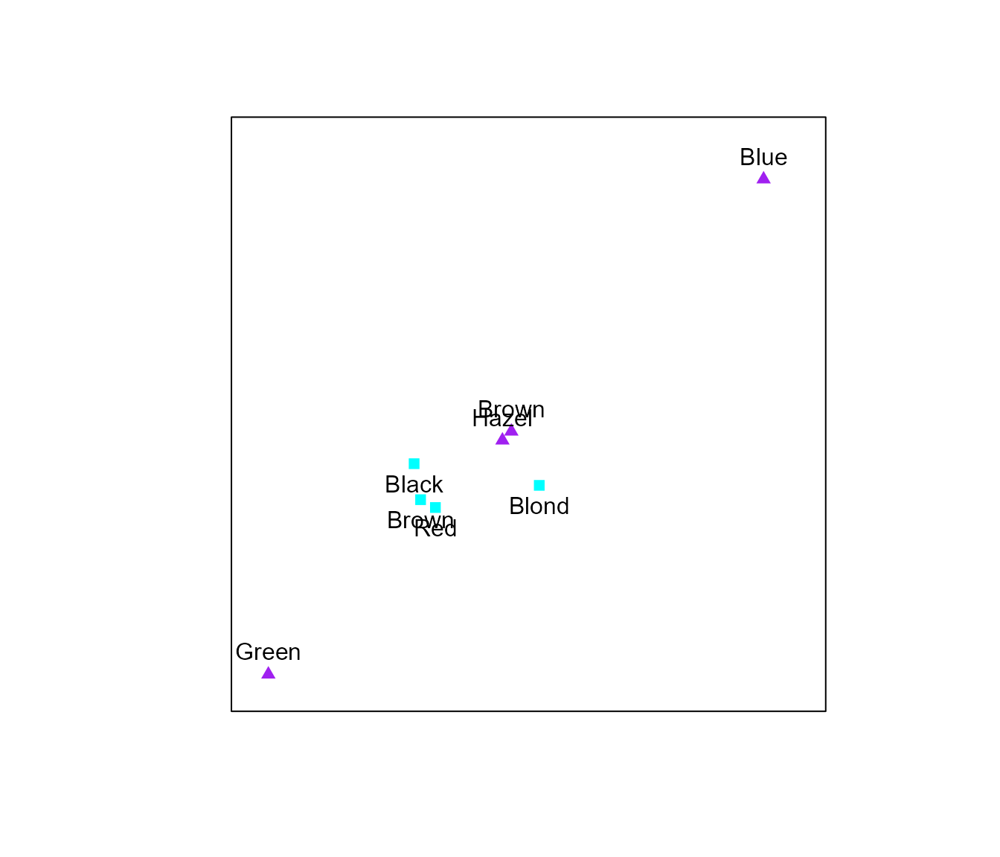
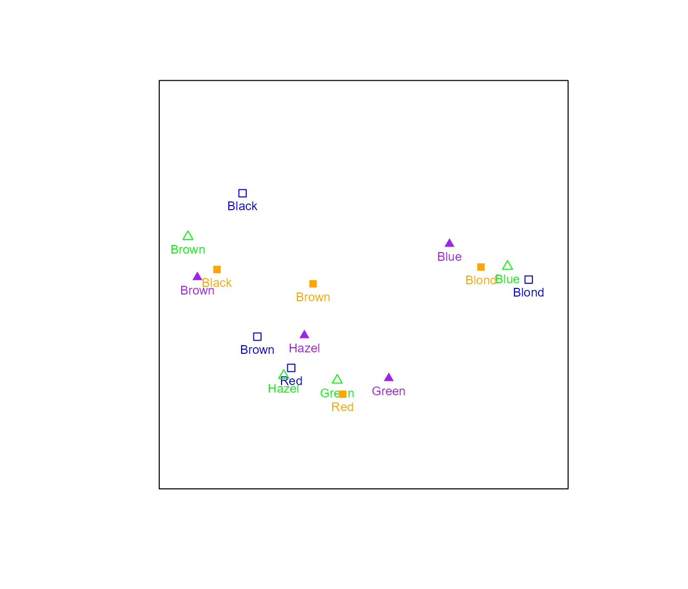

CA in biplotEZ
CA_in_biplotEZ.RmdWhat is a Correspondence Analysis?
In its simplest form Correspondence Analysis (CA) aims to expose the association between two categorical variables by utilising a two-way frequency table. Numerous variants of CA are available for the application to diverse problems, the interested reader is referred to: Gower, Lubbe, and Roux (2011), Beh and Lombardo (2014).
In biplotEZ focus will be places on three
EZ-to-use versions based on the Pearson residuals (Gower, Lubbe, and Roux (2011): Page 300).
Now, the two-way frequency table is also referred to as the data
matrix: \(\mathbf{X}:r\times c\). This
data matrix is different from the continuous case used for the
PCA() and CVA() examples, as it represents the
cross-tabulations of two categorical variables (i.e. factors), each with
a finite number of levels (i.e response values). The elements of the
data matrix represent the frequency of the co-occurrence of two
particular levels of the two variables. Consider the
HairEyeColor data set in R, which summarises
the hair and eye color of male and female statistics students. For the
purpose of this example only the male students will be considered:
X <- HairEyeColor[,,1]
X
#> Eye
#> Hair Brown Blue Hazel Green
#> Black 32 11 10 3
#> Brown 53 50 25 15
#> Red 10 10 7 7
#> Blond 3 30 5 8The grand total of the table \(N\) is obtained from the total of all frequencies:
\[ \sum_{r=1}^{R}\sum_{c=1}^{C}x_{rc}=N \]
N <- sum(X)
N
#> [1] 279It is common to work with the proportions rather than the frequencies in terms of the correspondence matrix, \(\mathbf{P}\):
\[ \mathbf{P}=\frac{\mathbf{X}}{N} \]
P <- X/N
P
#> Eye
#> Hair Brown Blue Hazel Green
#> Black 0.11469534 0.03942652 0.03584229 0.01075269
#> Brown 0.18996416 0.17921147 0.08960573 0.05376344
#> Red 0.03584229 0.03584229 0.02508961 0.02508961
#> Blond 0.01075269 0.10752688 0.01792115 0.02867384Other useful summaries of \(\mathbf{P}\) include the row and column masses (for arbitrary row and column \(r\) and \(c\), respectively), also expressed as diagonal matrices:
\[ \mathbf{r}_r = \sum_{c=1}^{C}p_{rc}; \hspace{0.5 cm} \mathbf{c}_c = \sum_{r=1}^{R}p_{rc}\\ \mathbf{r}=\mathbf{P1}; \hspace{0.5 cm} \mathbf{c}=\mathbf{P}^\prime\mathbf{1} \]
rMass <- rowSums(P)
rMass
#> Black Brown Red Blond
#> 0.2007168 0.5125448 0.1218638 0.1648746
cMass <- colSums(P)
cMass
#> Brown Blue Hazel Green
#> 0.3512545 0.3620072 0.1684588 0.1182796Diagonal matrices:
\[ \mathbf{D_r}=\text{diag}(\mathbf{r}); \hspace{0.5 cm} \mathbf{D_c}=\text{diag}(\mathbf{c}) \]
Dr <- diag(apply(P, 1, sum))
Dr
#> [,1] [,2] [,3] [,4]
#> [1,] 0.2007168 0.0000000 0.0000000 0.0000000
#> [2,] 0.0000000 0.5125448 0.0000000 0.0000000
#> [3,] 0.0000000 0.0000000 0.1218638 0.0000000
#> [4,] 0.0000000 0.0000000 0.0000000 0.1648746
Dc <- diag(apply(P, 2, sum))
Dc
#> [,1] [,2] [,3] [,4]
#> [1,] 0.3512545 0.0000000 0.0000000 0.0000000
#> [2,] 0.0000000 0.3620072 0.0000000 0.0000000
#> [3,] 0.0000000 0.0000000 0.1684588 0.0000000
#> [4,] 0.0000000 0.0000000 0.0000000 0.1182796In order to obtain the first form of the row and column coordinates, the singular value decomposition (SVD) of the matrix of standardised Pearson residuals (\(\mathbf{S}\)) is computed:
\[
\begin{aligned}
\text{SVD}(\mathbf{S}) &=
\text{SVD}\left(\mathbf{D_r^{-\frac{1}{2}}}(\mathbf{P}-\mathbf{rc^\prime})\mathbf{D_c^{-\frac{1}{2}}}\right)\\&=
\mathbf{U\Lambda V^\prime}
\end{aligned}
\] The return value for the Standardised pearson residuals is
Smat and the singular value decomposition,
SVD.
Smat <- sqrt(solve(Dr))%*%(P-(Dr %*%matrix(1, nrow = nrow(X), ncol = ncol(X)) %*% Dc))%*%sqrt(solve(Dc))
svd.out <- svd(Smat)This is linked to the \(\chi^2\)-statistic to determine whether the two categorical variables (i.e. the rows and columns of the contingency table) are independent. The expected frequencies represented by the product of the row and column masses (\(\mathbf{rc^\prime}\)).
Furthermore, since the weights of certain objects might be substantially different from others which could result in a distorted approximation in lower dimension, the \(\chi^2\)-distance, also referred to as the weighted Euclidean distance, is rather used to measure distances in CA. This is an intuitive decision as it follows from the \(\chi^2\)-statistic to test the independence between two categorical variables, in this case the independence between the rows and columns of the contingency table. (Beh and Lombardo (2014), Greenacre (2017)).
CA biplot
Coordinates
In order to construct a biplot in which the distances between the row and column coordinates are meaningful an asymmetric display should be constructed. This means that the contribution of the singular values should be different for the row and column coordinates. (Gabriel (1971)) The standard coordinates are expressed by:
\[ \begin{aligned} \text{Row standard coordinates:} \hspace{0.5 cm}&\mathbf{U}\\ \text{Column standard coordinates:} \hspace{0.5 cm}&\mathbf{V} \end{aligned} \]
The principal coordinates are expressed by:
\[ \begin{aligned} \text{Row principal coordinates:} \hspace{0.5 cm}&\mathbf{U\Lambda}\\ \text{Column principal coordinates:} \hspace{0.5 cm}&\mathbf{V\Lambda} \end{aligned} \]
By including the singular values the magnitude of the association between the variables are incorporated in the scaling of the coordinates.
In the ca() function the argument variant
allows the user to choose between three types of CA biplots:
Princ, Stand and Symmetric.
\[
\begin{aligned}
\text{Row coordinates:} \hspace{0.5 cm}&\mathbf{U\Lambda^\gamma}\\
\text{Column coordinates:} \hspace{0.5
cm}&\mathbf{V\Lambda^{1-\gamma}}
\end{aligned}
\] The row standard (i.e. column principal) coordinate biplot:
Stand, results from \(\gamma=0\).
The row principal (i.e. column standard) coordinate biplot:
Princ, results from \(\gamma=1\).
The symmetric plot in which row and column coordinates are scaled
equally: Symmetric, results from \(\gamma=0.5\).
The return value is rowcoor and colcoor,
respectively.
The quality of the biplot display
This is measured by the ratio of the variance explained (sum of the squared singular values of the utilised (\(M\)) components) and the total variance (sum of all squared singular values (\(p\))).
\[
\frac{\sum_{m=1}^{M}\lambda_m^2}{\sum_{m=1}^{p}\lambda_m^2}
\] The return value is qual.
The function CA()
The function CA() requires a two-way contingency table
as input and will return an object of class CA and
biplot. As this is not a standard data matrix as for
PCA and CVA, scaling and centering is not
allowed on the two-way contingency table and a warning will be given if
either scale or center is specified as
TRUE in biplot()`.
Variant="Stand"
To construct the CA biplot for row standard coordinates:

ca.out$qual
#> [1] 99.73298
Aesthetics and legend
The sample() function should be utilised to specify the
colours, plotting characters and expansion of the samples.
biplot(HairEyeColor[,,2], center = FALSE) |> CA(variant = "Princ") |>
samples(col=c("cyan","purple"), pch=c(15,17), label.side=c("bottom","top"),
label.cex=1) |> legend.type(samples = TRUE, new = TRUE) |> plot()
biplot(HairEyeColor[,,2], center = FALSE) |> CA(variant = "Symmetric") |>
samples(col=c("forestgreen","magenta"), pch=c(12,17), label.side=c("top","bottom")) |> legend.type(samples = TRUE) |> plot()